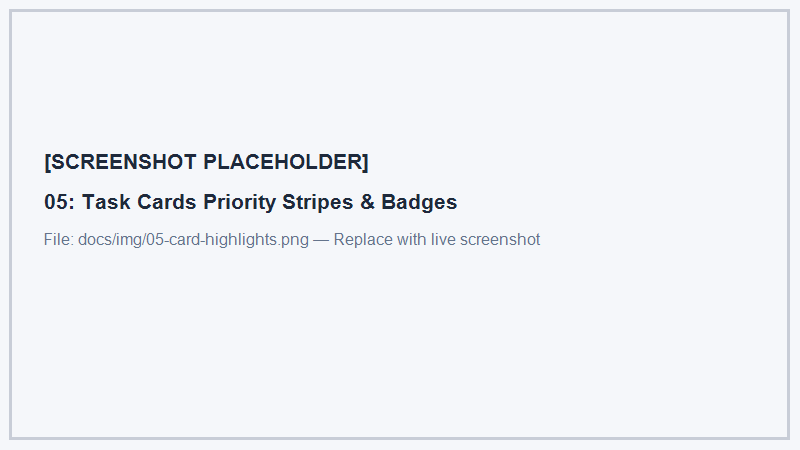
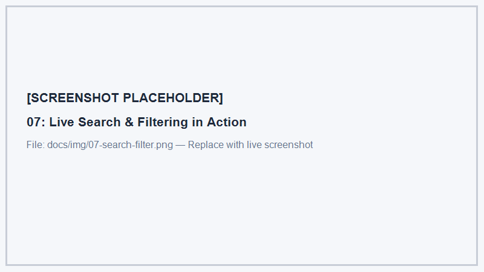
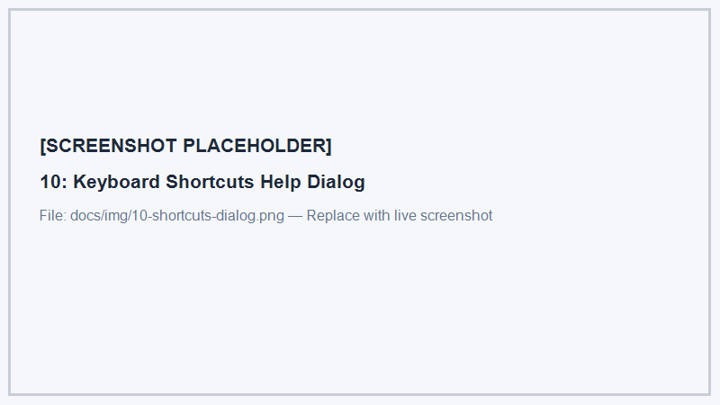

v1.0.0 (Git commit
6c41303)d:\University\5th Semester\Software Construction\Lab\OELBelow is the definitive inventory of screenshots required for the
physical submission. When capturing screenshots, save them to the
docs/img/ directory matching these exact filenames:
| Item | Target Filename | What the Screenshot Must Show | Status / Action Needed |
|---|---|---|---|
| 1 | docs/img/01-main-window.png |
Main application dashboard displaying top toolbar, left category sidebar with counts, task card list with sample tasks, and status bar. | [SCREENSHOT NEEDED: Capture main window with sample tasks loaded] |
| 2 | docs/img/02-task-simple.png |
“New Task” dialog with Simple type selected, title
filled, description entered, High priority, and category assigned. |
[SCREENSHOT NEEDED: Capture Simple Task creation dialog] |
| 3 | docs/img/03-task-checklist.png |
Task Editor with Checklist type selected, showing
dynamic sub-item inputs, progress bar, and several checked/unchecked
items. |
[SCREENSHOT NEEDED: Capture Checklist Task creation dialog] |
| 4 | docs/img/04-task-deadline.png |
Task Editor with Deadline type selected, demonstrating
the JavaFX DatePicker calendar dropdown. |
[SCREENSHOT NEEDED: Capture Deadline Task dialog with DatePicker open] |
| 5 | docs/img/05-card-highlights.png |
Task list cards displaying visual indicators: red High priority stripe, amber Medium stripe, green Low stripe, gold Pin badge, red Overdue badge, and amber Due-Soon badge. | [SCREENSHOT NEEDED: Capture task cards showing priority stripes, pin badge & overdue tags] |
| 6 | docs/img/06-category-dialog.png |
Category Management dialog showing name input field and color selection palette. | [SCREENSHOT NEEDED: Capture Category Creation modal dialog] |
| 7 | docs/img/07-search-filter.png |
Main window showing an active search query in the toolbar search box, category filter applied, and filtered card results. | [SCREENSHOT NEEDED: Capture search/filter in action with matching cards] |
| 8 | docs/img/08-undo-toast.png |
Bottom toast notification banner displaying
"Task '...' deleted. [Undo]" and the menu item
Edit ▸ Undo Delete. |
[SCREENSHOT NEEDED: Capture delete confirmation and undo toast notification banner] |
| 9 | docs/img/09-about-dialog.png |
“About TODO App” dialog showing version 1.0.0, toolkit
details, and authorship information (Help ▸ About). |
[SCREENSHOT NEEDED: Capture About dialog] |
| 10 | docs/img/10-shortcuts-dialog.png |
Keyboard Shortcuts reference dialog
(Help ▸ Keyboard Shortcuts). |
[SCREENSHOT NEEDED: Capture Keyboard Shortcuts help dialog] |
This report documents the end-to-end engineering, architectural
design, implementation, and quality verification of the TODO
List Desktop Application (v1.0.0), developed for the Software
Construction Lab Open-Ended Lab (OEL). The system is a standalone,
offline-first personal productivity desktop utility written in modern
Java 17 and JavaFX 21, following strict object-oriented design
principles, layered separation of concerns, and an automated continuous
test pipeline. The application features a card-based user experience
inspired by Google Keep and Microsoft To-Do, supporting polymorphic task
types (Simple tasks, Checklist tasks with sub-item progress tracking,
and Deadline tasks with due-date alerts), custom categories with safe
reassignment, multi-criteria live filtering and sorting with a
pinned-to-top invariant, and atomic JSON persistence backed by
thread-safe debounced autosave. The codebase contains 54 production Java
source files (6,131 lines of code) and 14 automated JUnit test suites
(2,928 lines of code). Automated verification enforces a strict JaCoCo
threshold of ≥80% line coverage across all non-UI packages, achieving an
actual coverage of 96.63% across 147 test cases with
zero defects. The development followed a disciplined, strictly linear
Git workflow across 81 Conventional Commits, culminating in the tagged
v1.0.0 release.
Task management applications are fundamental personal computing utilities. While web and cloud-based task management solutions are prevalent, they frequently present usability drawbacks for local power users: reliance on active network connectivity, sluggish load times, vendor lock-in, and aggressive subscription models. Desktop users require a lightweight, responsive, locally resilient tool that opens instantly, saves continuously without manual intervention, and respects user data privacy through transparent local storage formats.
From an educational perspective, developing a comprehensive desktop task management system provides an exemplary vehicle for synthesizing key concepts in software construction: domain modeling, polymorphism, interface segregation, GUI event handling, asynchronous background concurrency, fault-tolerant file persistence, unit testing, and rigorous version control.
The primary objectives of this project were: 1. Architectural
Decoupling: Establish a strict layered architecture (UI → Controller → Service →
Repository → Storage → Model) wherein the core domain, services,
and persistence layers possess zero dependencies on GUI frameworks
(javafx.*), enabling rapid headless unit testing. 2.
Polymorphic Domain Modeling: Implement a robust task
hierarchy supporting standard to-dos, multi-item checklists with
calculated completion metrics, and calendar deadlines with automated
overdue detection. 3. Ergonomic & Resilient User
Interface: Construct an aesthetically pleasing, responsive
JavaFX desktop interface featuring card layouts, priority indicators,
category sidebars, keyboard shortcuts, inline input validation, and undo
functionality. 4. Data Integrity & Crash
Resilience: Deliver a thread-safe persistence engine utilizing
atomic temporary-file writes, automated corruption quarantine, and
non-blocking debounced autosave. 5. Quality Assurance &
Traceability: Achieve ≥ 80%
automated line coverage, execute comprehensive edge-case testing, and
maintain full bi-directional traceability from requirements to code and
test cases.
The software was engineered, built, and verified using the following
industrial-standard toolchain: - Programming Language:
Java Development Kit (OpenJDK 17 LTS / OpenJDK 21 LTS / OpenJDK 25) -
Graphical Toolkit: JavaFX (OpenJFX) 21.0.2 (Controls,
Graphics, Base) - Build & Dependency Management:
Apache Maven 3.9.9 - Data Serialization: Google Gson
2.10.1 (Type discriminator mapping) - Automated
Testing: JUnit Jupiter 5.10.2 (JUnit 5 Platform) - Code
Coverage: JaCoCo Maven Plugin 0.8.11 (Threshold enforcement at
package/bundle levels) - Version Control: Git 2.30+
(Single-branch linear workflow on main) -
Documentation & Publishing: Pandoc 3.8.3, Markdown,
KaTeX, Mermaid Diagrams
This project demonstrates the student’s mastery of the course
objectives specified in the Software Construction syllabus: -
CLO 2 (Design & Implementation): Evidenced by
Chapters 4, 5, 6, and 7 through detailed UML modeling, design pattern
adoption (MVC, Observer, Factory, Data Mapper), and clean
object-oriented implementation. - CLO 4 (Testing & Quality
Assurance): Evidenced by Chapters 8, 9, and 10 through 147
headless unit tests, JaCoCo code coverage verification (96.63%), static
linting (-Xlint:all), and a structured Git repository.
The mapping between assignment tasks and report chapters is summarized below:
| Assignment Task | Focus Area | Report Chapter |
|---|---|---|
| Task 1 | Requirements Gathering, Analysis & Specification | Chapter 3: Requirements Analysis |
| Task 2 | Architecture, Detailed Design & System Modeling | Chapter 4: System Architecture & Detailed Design |
| Task 3 | Object-Oriented Implementation & GUI Development | Chapter 5, Chapter 6 & Chapter 7 |
| Task 4 | Automated Testing, Edge Cases & Verification | Chapter 8: Testing & Quality Assurance |
| Task 5 | Version Control, Git Workflow & Lifecycle Tracking | Chapter 9: Version Control with Git |
Requirements analysis identified two core primary personas: 1. Alex (University Student): Manages conflicting lab deadlines, homework assignments, and club responsibilities. Requires instant task creation, visual deadline highlighting (due soon / overdue), checklist breakdowns for multifaceted projects, and high reliability so notes are never lost. 2. Priya (Working Professional): Needs to organize tasks by context (Work, Personal, Finance), rapidly triage priorities via keyboard shortcuts, pin critical action items to the top of the queue, and filter out noise by hiding completed items.
The system satisfies 17 functional requirements categorized using the MoSCoW prioritization scheme:
┌─────────────────────────────────────────────────────────────────────────────┐
│ MoSCoW REQUIREMENTS SUMMARY │
├─────────────────────────────────────────────────────────────────────────────┤
│ MUST HAVE (Core Essentials): │
│ • FR-01: Create Task (Title, description, priority, category) │
│ • FR-02: Read / View Task Details (Summary cards, inspector dialog) │
│ • FR-03: Update Task (In-place modification of task fields) │
│ • FR-04: Delete Task (Explicit removal with confirmation dialog) │
│ • FR-05: Mark Complete / Incomplete (One-click toggle, visual strikethrough)│
│ • FR-06: Prioritize Task (High, Medium, Low with color-coded stripes) │
│ • FR-07: Sort Tasks (Due date, priority, title, created date; pin invariant)│
│ • FR-08: Categories (Add custom categories, color badges, safe reassignment)│
│ • FR-09: Filter Tasks (Category filter, status filter, priority filter) │
│ • FR-10: Search Tasks (Instant debounced search across title & description) │
│ • FR-13: Persistence (Local JSON storage with auto-load and atomic save) │
│ • FR-17: Validation (Title 1-100 chars, non-blank, date rules, unique names)│
├─────────────────────────────────────────────────────────────────────────────┤
│ SHOULD HAVE (Key Differentiators): │
│ • FR-11: Checklist Tasks (Sub-items with individual completion checkboxes) │
│ • FR-12: Deadline Tasks (Due date picker, overdue and due-soon badges) │
│ • FR-14: Pin Tasks (Anchor critical items to top regardless of active sort) │
│ • FR-15: Undo Delete (Single-step restoration via toast notification banner)│
│ • FR-16: Keyboard Shortcuts (Ctrl+N, Ctrl+F, Ctrl+Z, Space, Delete, Enter) │
└─────────────────────────────────────────────────────────────────────────────┘data.json.tmp → data.json). Corrupt files are
automatically quarantined to timestamped backups
(data.json.corrupt-<timestamp>).mvn javafx:run workflows
supported.-Xlint:all; decoupled package design with modular
responsibilities.model, repository, service,
storage, controller) have zero JavaFX
dependencies, enabling fast headless execution in standard JUnit test
runners. Automated suite enforces ≥ 80% line coverage.Platform.runLater.The system defines 8 detailed use cases specifying actor actions,
system responses, and error flows: - UC-01 (Create
Task): User triggers dialog via Ctrl+N → enters fields → validation checks → entity constructed → repository updated → autosave scheduled → view refreshed. - UC-02 (View Task
Details): User double-clicks card → pre-filled modal inspector opened. -
UC-03 (Edit Task): User modifies attributes in place
→ TaskFactory.apply
updates entity → view updates. -
UC-04 (Delete Task with Undo): User triggers delete
→ confirmation prompt → entity moved to single-slot undo buffer
→ toast banner displayed → user presses Ctrl+Z → entity restored. - UC-05 (Manage
Categories): User creates category with unique name and color
→ deletion reassigns child tasks to
default General category. - UC-06 (Filter &
Search): User types query into search bar → debounced query engine filters matching
items while respecting category and status constraints. - UC-07
(Sort with Pin Invariant): Tasks sorted by selected criteria;
pinned cards remain anchored at top. - UC-08 (Persistence &
Recovery): Autosave listener serializes state to disk;
unreadable files are quarantined safely.
The system adheres to a strict, layered architectural model where
dependencies flow strictly downward. To maximize automated testability,
the presentation layer (com.todoapp.ui) is completely
decoupled from the underlying domain model, service logic, and storage
mechanisms.
┌─────────────────────────────────────────────────────────────────────────────┐
│ PRESENTATION TIER │
│ com.todoapp.ui (MainView, TaskListPane, TaskCell, AppMenuBar, Dialogs) │
└──────────────────────────────────────┬──────────────────────────────────────┘
│ Calls actions / Listens to state
┌──────────────────────────────────────▼──────────────────────────────────────┐
│ CONTROLLER TIER │
│ com.todoapp.controller (MainController, ViewState, ViewListener) │
└──────────────────────────────────────┬──────────────────────────────────────┘
│ Dispatches commands
┌──────────────────────────────────────▼──────────────────────────────────────┐
│ SERVICE TIER │
│ com.todoapp.service (TaskService, CategoryService, TaskQuery, SortOption) │
└──────────────────────────────────────┬──────────────────────────────────────┘
│ Queries & mutates entities
┌──────────────────────────────────────▼──────────────────────────────────────┐
│ REPOSITORY TIER │
│ com.todoapp.repository (TaskRepository, CategoryRepository, In-Memory) │
└──────────────────────────────────────┬──────────────────────────────────────┘
│ Loaded from / Saved to
┌──────────────────────────────────────▼──────────────────────────────────────┐
│ STORAGE TIER │
│ com.todoapp.storage (Storage, JsonStorage, JsonMapper, AutosaveListener) │
└──────────────────────────────────────┬──────────────────────────────────────┘
│ Operates upon
┌──────────────────────────────────────▼──────────────────────────────────────┐
│ DOMAIN MODEL │
│ com.todoapp.model (Task hierarchy, Category, Priority, TaskDraft, Factory) │
└─────────────────────────────────────────────────────────────────────────────┘model, repository,
service, storage, or controller
import any class from javafx.*. This rule ensures all
business logic executes in standard, headless JUnit runners within
milliseconds.TaskService returns deep copies of
Task objects to external callers via
Task.copy(). External consumers cannot mutate stored
repository references directly; updates must be submitted via validated
TaskDraft records.Platform.runLater.The application is structured into 6 focused packages under
com.todoapp:
com.todoapp/
├── App.java # JavaFX bootstrap, dependency injection & lifecycle
├── AppConfig.java # Immutable CLI & system properties record parser
├── DevSeed.java # Sample data generator for development testing
├── Launcher.java # Non-Application launcher for shaded JAR compatibility
│
├── model/ # Domain entities, records, and factories
│ ├── Task.java # Abstract root entity with core attributes
│ ├── SimpleTask.java # Standard to-do task implementation
│ ├── ChecklistTask.java # Multi-item task with progress ratio calculation
│ ├── ChecklistItem.java # Individual checklist sub-item entity
│ ├── DeadlineTask.java # Calendar deadline task with overdue logic
│ ├── Category.java # Categorization entity with hex color codes
│ ├── Priority.java # Enumeration: HIGH (Red), MEDIUM (Amber), LOW (Green)
│ ├── TaskType.java # Enumeration: SIMPLE, CHECKLIST, DEADLINE
│ ├── TaskDraft.java # Immutable value record for creation & update inputs
│ └── TaskFactory.java # Centralized instantiation and draft application factory
│
├── repository/ # Storage-agnostic repository interfaces & implementations
│ ├── TaskRepository.java # Task CRUD & query abstraction
│ ├── CategoryRepository.java # Category CRUD & name lookup abstraction
│ ├── InMemoryTaskRepository.java # LinkedHashMap-backed task repository
│ └── InMemoryCategoryRepository.java # LinkedHashMap-backed category repository
│
├── service/ # Business logic, query engine, and domain events
│ ├── TaskService.java # Task lifecycle, sorting, priority, pin, undo buffer
│ ├── CategoryService.java # Category rules, validation, deletion reassignment
│ ├── TaskQuery.java # Immutable multi-criteria query record
│ ├── SortOption.java # Sorting strategy: DUE_DATE, PRIORITY, TITLE, CREATED
│ ├── StatusFilter.java # Status filtering strategy: ALL, ACTIVE, COMPLETED
│ ├── TaskChangeListener.java # Observer callback for repository mutations
│ ├── ChangeType.java # Event types: CREATED, UPDATED, DELETED, RESTORED
│ ├── ValidationException.java # Domain validation failure exception
│ └── NotFoundException.java # Entity lookup failure exception
│
├── storage/ # Persistence abstraction, atomic file I/O & autosave
│ ├── Storage.java # Persistence contract: load() and save()
│ ├── JsonStorage.java # Atomic file I/O with corruption quarantine
│ ├── JsonMapper.java # Gson polymorphic mapping with type discriminator
│ ├── AppData.java # Immutable root container record (categories, tasks)
│ ├── DataSync.java # Repository-to-AppData snapshot & population utility
│ ├── AutosaveListener.java # Debounced background executor for persistent autosave
│ └── StorageException.java # File read/write failure runtime exception
│
├── controller/ # Presentation orchestration & UI state management
│ ├── MainController.java # Dispatches UI gestures to services, coordinates state
│ ├── ViewState.java # Immutable snapshot of UI state (query, selection, messages)
│ └── ViewListener.java # Observer contract for notifying views of state changes
│
└── ui/ # JavaFX controls, custom cells, dialogs & styling
├── MainView.java # Root BorderPane view composing all UI panels
├── AppMenuBar.java # Top menu bar (File, Edit, View, Help) with shortcuts
├── ToolbarPane.java # Search bar, "+ New Task" button, sort & status filters
├── CategoryPane.java # Left sidebar listing categories with count badges
├── TaskListPane.java # Center ListView hosting custom task cells
├── TaskCell.java # Polymorphic ListCell rendering cards with stripes & badges
├── TaskEditorDialog.java # Modal dialog for creating and editing tasks
├── CategoryDialog.java # Modal dialog for creating custom categories
├── StatusBar.java # Bottom bar showing task counts and autosave status
└── Theme.java # Design tokens, palette constants, and stylesheet bindingsThe system’s structural design is captured in the UML class diagram below:
classDiagram
direction TB
%% Model Layer
class Task {
<<abstract>>
-UUID id
-String title
-String description
-Priority priority
-UUID categoryId
-boolean completed
-boolean pinned
-LocalDateTime createdAt
-LocalDateTime updatedAt
+getId() UUID
+getTitle() String
+setTitle(String)
+getDescription() String
+setDescription(String)
+getPriority() Priority
+setPriority(Priority)
+getCategoryId() UUID
+setCategoryId(UUID)
+isCompleted() boolean
+setCompleted(boolean)
+isPinned() boolean
+setPinned(boolean)
+getCreatedAt() LocalDateTime
+getUpdatedAt() LocalDateTime
+touch()
+getType()* TaskType
+getSummary()* String
+getProgress()* double
+getDueDate()* Optional~LocalDate~
+isOverdue(LocalDate)* boolean
+copy()* Task
}
class SimpleTask {
+getType() TaskType
+getSummary() String
+getProgress() double
+getDueDate() Optional~LocalDate~
+isOverdue(LocalDate) boolean
+copy() SimpleTask
}
class ChecklistTask {
-List~ChecklistItem~ items
+getItems() List~ChecklistItem~
+addItem(String) ChecklistItem
+removeItem(UUID) boolean
+toggleItem(UUID) boolean
+getType() TaskType
+getSummary() String
+getProgress() double
+getDueDate() Optional~LocalDate~
+isOverdue(LocalDate) boolean
+copy() ChecklistTask
}
class ChecklistItem {
-UUID id
-String text
-boolean completed
+getId() UUID
+getText() String
+setText(String)
+isCompleted() boolean
+setCompleted(boolean)
+copy() ChecklistItem
}
class DeadlineTask {
-LocalDate dueDate
+getDueDate() Optional~LocalDate~
+setDueDate(LocalDate)
+isOverdue(LocalDate) boolean
+getType() TaskType
+getSummary() String
+getProgress() double
+copy() DeadlineTask
}
class Category {
-UUID id
-String name
-String colorHex
+getId() UUID
+getName() String
+setName(String)
+getColorHex() String
+setColorHex(String)
+copy() Category
}
class Priority {
<<enumeration>>
HIGH
MEDIUM
LOW
}
class TaskType {
<<enumeration>>
SIMPLE
CHECKLIST
DEADLINE
}
class TaskDraft {
<<record>>
+TaskType type
+String title
+String description
+Priority priority
+UUID categoryId
+LocalDate dueDate
+List~String~ checklistItems
+validate()
}
class TaskFactory {
+static create(TaskDraft) Task
+static create(TaskDraft, LocalDateTime) Task
+static apply(Task, TaskDraft)
+static apply(Task, TaskDraft, LocalDateTime)
}
Task <|-- SimpleTask
Task <|-- ChecklistTask
Task <|-- DeadlineTask
ChecklistTask "1" *-- "0..*" ChecklistItem
Task --> Priority
Task --> TaskType
Task ..> Category : references categoryId
TaskFactory ..> Task : creates/modifies
TaskFactory ..> TaskDraft : consumes
%% Repository Layer
class TaskRepository {
<<interface>>
+findAll() List~Task~
+findById(UUID) Optional~Task~
+save(Task) Task
+deleteById(UUID) Optional~Task~
+clear()
+count() int
}
class InMemoryTaskRepository {
-Map~UUID, Task~ tasks
+findAll() List~Task~
+findById(UUID) Optional~Task~
+save(Task) Task
+deleteById(UUID) Optional~Task~
+clear()
+count() int
}
class CategoryRepository {
<<interface>>
+findAll() List~Category~
+findById(UUID) Optional~Category~
+findByNameIgnoreCase(String) Optional~Category~
+save(Category) Category
+deleteById(UUID) Optional~Category~
+clear()
+count() int
}
class InMemoryCategoryRepository {
-Map~UUID, Category~ categories
+findAll() List~Category~
+findById(UUID) Optional~Category~
+findByNameIgnoreCase(String) Optional~Category~
+save(Category) Category
+deleteById(UUID) Optional~Category~
+clear()
+count() int
}
TaskRepository <|.. InMemoryTaskRepository
CategoryRepository <|.. InMemoryCategoryRepository
%% Service Layer
class TaskService {
-TaskRepository taskRepo
-CategoryRepository categoryRepo
-Clock clock
-List~TaskChangeListener~ listeners
-Task undoBuffer
+create(TaskDraft) Task
+update(UUID, TaskDraft) Task
+delete(UUID) Task
+undoDelete() Optional~Task~
+get(UUID) Task
+getAll() List~Task~
+toggleComplete(UUID) Task
+setPriority(UUID, Priority) Task
+togglePinned(UUID) Task
+query(TaskQuery) List~Task~
+countByPriority(TaskQuery) Map~Priority, Integer~
+countActive() int
+countCompleted() int
+addListener(TaskChangeListener)
}
class CategoryService {
-CategoryRepository categoryRepo
-TaskRepository taskRepo
-Clock clock
-List~TaskChangeListener~ listeners
+create(String, String) Category
+rename(UUID, String) Category
+recolor(UUID, String) Category
+delete(UUID) Category
+getAll() List~Category~
+get(UUID) Category
+countTasks(UUID) int
+addListener(TaskChangeListener)
}
class TaskChangeListener {
<<interface>>
+onTasksChanged(ChangeType, UUID)
}
class TaskQuery {
<<record>>
+UUID categoryId
+StatusFilter status
+Priority priority
+String searchText
+SortOption sort
+boolean ascending
+withCategory(UUID) TaskQuery
+withStatus(StatusFilter) TaskQuery
+withPriority(Priority) TaskQuery
+withSearch(String) TaskQuery
+withSort(SortOption, boolean) TaskQuery
}
TaskService --> TaskRepository
TaskService --> CategoryRepository
TaskService ..> TaskChangeListener : notifies
CategoryService --> CategoryRepository
CategoryService --> TaskRepository
CategoryService ..> TaskChangeListener : notifies
TaskService ..> TaskQuery : filters with
%% Storage Layer
class Storage {
<<interface>>
+load() AppData
+save(AppData)
}
class JsonStorage {
-Path filePath
-Clock clock
-String lastLoadWarning
+load() AppData
+save(AppData)
+getLastLoadWarning() Optional~String~
}
class AppData {
<<record>>
+int schemaVersion
+List~Category~ categories
+List~Task~ tasks
}
class JsonMapper {
+static toJson(AppData) JsonObject
+static fromJson(JsonObject) AppData
+static taskToJson(Task) JsonObject
+static taskFromJson(JsonObject) Task
}
class DataSync {
+static populateRepositories(AppData, TaskRepository, CategoryRepository)
+static snapshot(TaskRepository, CategoryRepository) AppData
}
class AutosaveListener {
-Storage storage
-TaskRepository taskRepo
-CategoryRepository categoryRepo
-ScheduledExecutorService executor
-Consumer~String~ errorCallback
+onTasksChanged(ChangeType, UUID)
+flush()
+close()
}
Storage <|.. JsonStorage
AutosaveListener ..|> TaskChangeListener
JsonStorage ..> JsonMapper : uses
JsonStorage ..> AppData : reads/writes
DataSync ..> AppData : converts
%% Controller Layer
class MainController {
-TaskService taskService
-CategoryService categoryService
-ViewState currentState
-List~ViewListener~ viewListeners
+onCreateTask(TaskDraft)
+onUpdateTask(UUID, TaskDraft)
+onDeleteTask(UUID)
+onUndoDelete()
+onToggleComplete(UUID)
+onSetPriority(UUID, Priority)
+onTogglePinned(UUID)
+onSelectCategory(UUID)
+onSearch(String)
+onSort(SortOption, boolean)
+onStatusFilter(StatusFilter)
+onPriorityFilter(Priority)
+onCreateCategory(String, String)
+onRenameCategory(UUID, String)
+onRecolorCategory(UUID, String)
+onDeleteCategory(UUID)
+refresh()
+addListener(ViewListener)
}
class ViewState {
<<record>>
+TaskQuery query
+UUID selectedTaskId
+String infoMessage
+String errorMessage
}
class ViewListener {
<<interface>>
+onViewChanged(List~Task~, List~Category~, ViewState)
}
MainController --> TaskService
MainController --> CategoryService
MainController ..> ViewListener : notifies
MainController *-- ViewState
%% UI Layer
class MainView {
-MainController controller
-AppMenuBar menuBar
-ToolbarPane toolbar
-CategoryPane categoryPane
-TaskListPane taskListPane
-StatusBar statusBar
+onViewChanged(List~Task~, List~Category~, ViewState)
}
class TaskCell {
+updateItem(Task, boolean)
}
class TaskEditorDialog {
+showAndWait() Optional~TaskDraft~
}
class AppMenuBar {
-MenuItem undoMenuItem
-CheckMenuItem showCompletedItem
+updateState(ViewState, boolean)
+static showAboutDialog()
+static showShortcutsDialog()
}
class CategoryDialog {
+showAndWait() Optional~CategoryDraft~
}
MainView ..|> ViewListener
MainView --> MainController
MainView *-- TaskCell
MainView *-- AppMenuBar
MainView ..> TaskEditorDialog : presents
MainView ..> CategoryDialog : presentsEvery data structure in the application was selected to optimize performance, memory efficiency, and algorithmic invariants:
| Data Structure | Layer & Location | Concrete Rationale & Complexity Analysis |
|---|---|---|
LinkedHashMap<UUID, Task> |
InMemoryTaskRepository |
Provides 𝒪(1) average-time
complexity for lookups, insertions, and deletions by UUID
primary key. Unlike standard HashMap, it preserves
deterministic insertion order, ensuring reproducible test output and
predictable JSON serialization. |
LinkedHashMap<UUID, Category> |
InMemoryCategoryRepository |
Ensures 𝒪(1) key-based access while
guaranteeing the default category (General) remains
permanently first in iteration order. |
ArrayList<ChecklistItem> |
ChecklistTask |
Optimal for small, ordered sequences of checklist sub-items. Contiguous memory allocation minimizes memory overhead, and index-based access is 𝒪(1). Typical checklist sizes rarely exceed 50 items. |
EnumMap<Priority, Integer> |
TaskService.countByPriority |
Uses an internal compact array indexed directly by the
Priority enum ordinal. Guarantees zero hashing collisions,
zero resize rehashes, and negligible memory footprint during status-bar
aggregation. |
Composite Comparator<Task> Chain |
TaskService.query |
Functional comparator composition:
Comparator.comparing(Task::isPinned).reversed().thenComparing(...).
Executes in 𝒪(Nlog N)
time, permanently anchoring pinned tasks at the top across all sort
selections and providing deterministic tie-breaking via
createdAt. |
The application stores all tasks, categories, and metadata in a
single, human-readable JSON document located at
~/.todoapp/data.json.
{
"schemaVersion": 1,
"categories": [
{
"id": "00000000-0000-0000-0000-000000000001",
"name": "General",
"colorHex": "#1976D2"
},
{
"id": "e4b10b83-a212-4c26-88d4-5394ef3f7521",
"name": "Academics",
"colorHex": "#388E3C"
}
],
"tasks": [
{
"type": "SIMPLE",
"id": "b3e04771-419b-4a81-a67b-11c5040081d2",
"title": "Review Software Construction lecture slides",
"description": "Focus on Layered Architecture and MVC patterns.",
"priority": "HIGH",
"categoryId": "e4b10b83-a212-4c26-88d4-5394ef3f7521",
"completed": false,
"pinned": true,
"createdAt": "2026-11-22T09:00:00",
"updatedAt": "2026-11-22T09:15:00"
},
{
"type": "CHECKLIST",
"id": "c8a4128f-7c15-46a2-9721-e09214b76c89",
"title": "Complete Open-Ended Lab Deliverables",
"description": "Milestones M00 through M14.",
"priority": "HIGH",
"categoryId": "e4b10b83-a212-4c26-88d4-5394ef3f7521",
"completed": false,
"pinned": false,
"createdAt": "2026-11-22T09:30:00",
"updatedAt": "2026-11-22T10:00:00",
"items": [
{
"id": "11111111-1111-1111-1111-111111111111",
"text": "M11: UI Extras & Polish",
"completed": true
},
{
"id": "22222222-2222-2222-2222-222222222222",
"text": "M12: Testing & Hardening",
"completed": true
},
{
"id": "33333333-3333-3333-3333-333333333333",
"text": "M13: Packaging & Release",
"completed": true
},
{
"id": "44444444-4444-4444-4444-444444444444",
"text": "M14: Final Project Report",
"completed": false
}
]
},
{
"type": "DEADLINE",
"id": "f5e92711-236b-4e12-859a-112345678901",
"title": "Submit Final OEL Report & Code",
"description": "Upload zipped artifact and commit log.",
"priority": "HIGH",
"categoryId": "e4b10b83-a212-4c26-88d4-5394ef3f7521",
"completed": false,
"pinned": true,
"createdAt": "2026-11-22T10:00:00",
"updatedAt": "2026-11-22T10:00:00",
"dueDate": "2026-11-23"
}
]
}To guarantee NFR-03 (Reliability & Crash Resilience),
JsonStorage.java performs file writes using a two-stage
atomic replace: 1. The serialized JSON string is written to a temporary
sibling file: ~/.todoapp/data.json.tmp. 2. The file is
flushed and closed to ensure all byte buffers are physically committed
to storage. 3.
Files.move(tempPath, targetPath, StandardCopyOption.ATOMIC_MOVE, StandardCopyOption.REPLACE_EXISTING)
executes the atomic filesystem inode replacement. 4. If a crash, power
outage, or OS kill occurs at any point during writing, the original
data.json remains completely intact and uncorrupted. 5. If
the target file contains malformed or unreadable JSON during startup,
the application immediately isolates the corrupted file by renaming it
to data.json.corrupt-<timestamp> and initializes a
clean state with default categories, preventing catastrophic
crashes.
sequenceDiagram
autonumber
actor User
participant View as MainView
participant Dialog as TaskEditorDialog
participant Ctrl as MainController
participant Svc as TaskService
participant Factory as TaskFactory
participant Repo as TaskRepository
participant Auto as AutosaveListener
User->>View: Click "New Task" (or Ctrl+N)
View->>Dialog: Open dialog(mode=CREATE)
User->>Dialog: Fill title, priority, category & click "Save"
Dialog->>Dialog: draft = new TaskDraft(...)
Dialog->>Ctrl: onCreateTask(draft)
Ctrl->>Svc: create(draft)
Svc->>Svc: draft.validate()
Svc->>Factory: TaskFactory.create(draft, now)
Factory-->>Svc: new Task instance
Svc->>Repo: save(task)
Repo-->>Svc: savedTask
Svc->>Auto: onTasksChanged(CREATED, taskId)
Auto-->>Auto: Schedule debounced save (300ms)
Svc-->>Ctrl: deep copy of savedTask
Ctrl->>Ctrl: refresh()
Ctrl->>Svc: query(currentQuery)
Svc-->>Ctrl: refreshedTaskList
Ctrl->>View: onViewChanged(tasks, categories, viewState)
View->>View: Update ListView & Status Bar
View->>Dialog: close()sequenceDiagram
autonumber
actor User
participant View as MainView
participant Alert as ConfirmDialog
participant Ctrl as MainController
participant Svc as TaskService
participant Repo as TaskRepository
participant Auto as AutosaveListener
User->>View: Press Delete (or Trash button)
View->>Alert: Show confirmation dialog
User->>Alert: Click "OK"
Alert-->>View: Confirmed
View->>Ctrl: onDeleteTask(taskId)
Ctrl->>Svc: delete(taskId)
Svc->>Repo: deleteById(taskId)
Repo-->>Svc: deletedTask
Svc->>Svc: undoBuffer = deletedTask.copy()
Svc->>Auto: onTasksChanged(DELETED, taskId)
Auto-->>Auto: Schedule debounced save (300ms)
Svc-->>Ctrl: deletedTask
Ctrl->>Ctrl: refresh()
Ctrl->>View: onViewChanged(tasks, categories, viewState)
View->>View: Display Toast Banner "Task deleted. [Undo]"
opt User clicks Undo (or Ctrl+Z)
User->>View: Click "Undo" button (or press Ctrl+Z)
View->>Ctrl: onUndoDelete()
Ctrl->>Svc: undoDelete()
Svc->>Repo: save(undoBuffer)
Svc->>Svc: undoBuffer = null
Svc->>Auto: onTasksChanged(RESTORED, taskId)
Svc-->>Ctrl: restoredTask
Ctrl->>Ctrl: refresh()
Ctrl->>View: onViewChanged(tasks, categories, viewState)
View->>View: Task restored to ListView
endThe user interface layout is organized around a primary root
BorderPane:
+----------------------------------------------------------------------------------------------------+
| File Edit View Help (AppMenuBar)|
+----------------------------------------------------------------------------------------------------+
| [+ New Task] [🔍 Search tasks...] [Filter: All/Active v] [Sort: Due Date v] (ToolbarPane) |
+-----------------------------------+----------------------------------------------------------------+
| CATEGORIES (CategoryPane) | TASKS (TaskListPane) |
| • All Tasks (12) | +------------------------------------------------------------+ |
| • General (3) | | [ ] 📌 Finish Lab Report [Work] [High]| |
| • Work (4) | | Complete all milestones and export PDF. | |
| • Personal (3) | | Due: Tomorrow • 4/5 items (80%) [==== ] | |
| • Shopping (2) | +------------------------------------------------------------+ |
| | +------------------------------------------------------------+ |
| | | [X] Buy groceries [Shopping] [Med] | |
| | | Milk, Bread, Bananas | |
| [+ Add Category] | +------------------------------------------------------------+ |
+-----------------------------------+----------------------------------------------------------------+
| Ready • 12 tasks (8 active, 4 completed) • Autosaved (StatusBar) |
+----------------------------------------------------------------------------------------------------+The software architecture incorporates five established design
patterns: 1. Model-View-Controller (MVC):
MainView acts as View, capturing user input and presenting
state; MainController acts as Controller, coordinating
actions and updating ViewState; TaskService
and domain entities act as Model. 2. Factory Method:
TaskFactory.java encapsulates the creation and modification
of polymorphic Task subtypes (SimpleTask,
ChecklistTask, DeadlineTask), abstracting
instantiation logic from callers. 3. Observer Pattern:
Implemented via two distinct event channels:
TaskChangeListener enables repositories and services to
publish mutation events to AutosaveListener;
ViewListener allows MainController to
broadcast updated ViewState snapshots to
MainView. 4. Data Mapper Pattern:
JsonMapper.java decouples domain entities from physical
storage formatting, using explicit "type" discriminator
properties to map bidirectional transformations between entities and
Gson JsonObject trees. 5. Strategy / Functional
Comparators: SortOption.java and
TaskQuery.java encapsulate dynamic sorting algorithms
(Comparator<Task>), allowing runtime selection of
sort strategies without modifying the querying engine.
| Architectural Decision | Chosen Alternative | Alternatives Considered | Concrete Rationale & Trade-Off Analysis |
|---|---|---|---|
| GUI Framework | JavaFX 21 (LTS) | Java Swing, SWT, JavaFX 17 | JavaFX 21 provides a modern scene-graph architecture, high-DPI font
rendering, CSS styling, observable property bindings, and high-level
controls (ListView, DatePicker,
Dialog). Retrieved via Maven Central without requiring
local SDK installations. |
| GUI Construction Style | Programmatic Java Code | FXML + FXMLLoader |
Building views programmatically in Java keeps the compilation fast and lightweight, eliminates runtime reflection overhead, provides complete compile-time type safety, and produces clean Git diffs during version control. |
| Persistence Format | Atomic JSON (Gson) | SQLite / H2, Native Java Serialization | JSON offers human readability, instant debugging, zero platform-specific C-library dependencies, and effortless multi-platform portability. Atomic write-and-replace prevents file corruption. |
| Entity Immutability | Defensive Copying via Task.copy() |
Shared mutable references, Read-only proxy wrappers | Service methods return deep copies of stored domain entities. This strictly prevents UI components from bypassing domain validation by directly mutating in-memory repository references. |
| Git Workflow | Single Linear Branch on main |
GitFlow, Feature Branches with Pull Requests | Tailored for solo developer efficiency. Eliminates merge commits, avoids branch synchronization overhead, and guarantees a completely linear, bisectable, and auditable Git history. |
| Launcher Separation | Distinct Launcher Entry Class |
Direct launch from App extends Application |
JavaFX requires that executable shaded fat JARs do not have a main
class extending Application, or the JVM throws
Missing JavaFX runtime components. The separate
Launcher.java resolves this cleanly. |
| Autosave Strategy | Debounced Background Executor (300 ms) | Immediate synchronous save, Periodic fixed timer | Immediate synchronous saves would block the UI thread during rapid keystrokes; fixed periodic timers risk losing up to the period duration of edits on crash. A 300 ms debounce triggers persistence immediately after typing stops while maintaining zero UI lag. |
The software construction was executed in an iterative, test-driven sequence across 14 distinct milestones:
.gitignore, initialized the single-branch Git repository,
and created the Launcher decoupling class.Task,
SimpleTask, ChecklistTask,
DeadlineTask, Category, Priority,
TaskDraft, and TaskFactory), with 100% unit
test coverage for copy semantics and validation rules.LinkedHashMap stores; implemented
CategoryService with case-insensitive name uniqueness and
zero-orphan deletion reassignment.TaskChangeListener).Comparator chain enforcing the pinned-to-top
invariant.v0.1.0):
Engineered atomic file writing (JsonStorage), Gson
polymorphic serialization (JsonMapper), and the background
debounced autosave listener (AutosaveListener).MainView,
ToolbarPane, CategoryPane,
TaskListPane, StatusBar, and
Theme, orchestrated by MainController.v0.2.0): Created the modal
TaskEditorDialog, custom polymorphic TaskCell
card views, deletion confirmation alerts, and context menus.v0.3.0): Added the CategoryDialog,
dynamic category sidebar counts, pin toggle controls, and multi-criteria
filter bindings.AppMenuBar), application-wide keyboard shortcuts, due-soon
highlights, and window geometry persistence across restarts via
java.util.prefs.Preferences.docs/test-plan.md.v1.0.0): Configured
maven-shade-plugin to package runnable fat JAR
target/todo-app-1.0.0.jar, completed
README.md, authored docs/user-guide.md,
reconciled docs/design.md, completed the traceability
matrix, and mapped academic course outcomes in
docs/course-mapping.md.From src/main/java/com/todoapp/model/Task.java:
public abstract class Task {
private final UUID id;
private String title;
private String description;
private Priority priority;
private UUID categoryId;
private boolean completed;
private boolean pinned;
private final LocalDateTime createdAt;
private LocalDateTime updatedAt;
// Polymorphic contracts implemented by concrete subclasses
public abstract TaskType getType();
public abstract String getSummary();
public abstract double getProgress();
public abstract Optional<LocalDate> getDueDate();
public abstract boolean isOverdue(LocalDate referenceDate);
public abstract Task copy();
public void touch() {
this.updatedAt = LocalDateTime.now();
}
}Annotation: Abstract Task encapsulates shared
identity and metadata while declaring polymorphic contracts
(getType(), getProgress(),
isOverdue(), copy()). Concrete subclasses
(SimpleTask, ChecklistTask,
DeadlineTask) provide tailored implementations without
leaking subtype-specific fields to generic consumers.
From
src/main/java/com/todoapp/model/TaskFactory.java:
public final class TaskFactory {
public static Task create(TaskDraft draft, LocalDateTime now) {
draft.validate();
return switch (draft.type()) {
case SIMPLE -> new SimpleTask(
UUID.randomUUID(), draft.title(), draft.description(),
draft.priority(), draft.categoryId(), false, false, now, now
);
case CHECKLIST -> {
ChecklistTask task = new ChecklistTask(
UUID.randomUUID(), draft.title(), draft.description(),
draft.priority(), draft.categoryId(), false, false, now, now
);
for (String itemText : draft.checklistItems()) {
task.addItem(itemText);
}
yield task;
}
case DEADLINE -> new DeadlineTask(
UUID.randomUUID(), draft.title(), draft.description(),
draft.priority(), draft.categoryId(), false, false, now, now,
draft.dueDate()
);
};
}
}Annotation: The Factory Pattern centralizes entity construction, guarantees validation invocation prior to instantiation, and isolates calling layers from concrete class constructors.
From
src/main/java/com/todoapp/service/TaskService.java:
private void notifyListeners(ChangeType type, UUID entityId) {
for (TaskChangeListener listener : listeners) {
try {
listener.onTasksChanged(type, entityId);
} catch (Throwable ex) {
LOGGER.log(Level.WARNING, "Error executing TaskChangeListener", ex);
}
}
}Annotation: Decouples business logic from persistence.
Whenever a task is created, updated, or deleted,
TaskService fires events to registered observers (such as
AutosaveListener) with defensive exception isolation so one
failing listener cannot crash core operations.
From
src/main/java/com/todoapp/service/TaskService.java:
public List<Task> query(TaskQuery query) {
Comparator<Task> secondary = switch (query.sort()) {
case DUE_DATE -> Comparator.comparing(
(Task t) -> t.getDueDate().orElse(LocalDate.MAX)
).thenComparing(Task::getCreatedAt, Comparator.reverseOrder());
case PRIORITY -> Comparator.comparing(Task::getPriority)
.thenComparing(Task::getCreatedAt, Comparator.reverseOrder());
case TITLE -> Comparator.comparing((Task t) -> t.getTitle().toLowerCase())
.thenComparing(Task::getCreatedAt, Comparator.reverseOrder());
case CREATED_DATE -> Comparator.comparing(Task::getCreatedAt).reversed();
};
Comparator<Task> finalComparator = Comparator
.comparing(Task::isPinned).reversed()
.thenComparing(query.ascending() ? secondary : secondary.reversed());
return taskRepo.findAll().stream()
.filter(filterPredicate(query))
.sorted(finalComparator)
.map(Task::copy)
.toList();
}Annotation: Combines functional predicates with a composite
Comparator chain. Pinned tasks are sorted permanently ahead
of unpinned cards (comparing(Task::isPinned).reversed()),
with deterministic tie-breaking on creation timestamps.
From
src/main/java/com/todoapp/storage/JsonMapper.java:
public static JsonObject taskToJson(Task task) {
JsonObject json = new JsonObject();
json.addProperty("type", task.getType().name());
json.addProperty("id", task.getId().toString());
json.addProperty("title", task.getTitle());
json.addProperty("description", task.getDescription());
json.addProperty("priority", task.getPriority().name());
json.addProperty("categoryId", task.getCategoryId().toString());
json.addProperty("completed", task.isCompleted());
json.addProperty("pinned", task.isPinned());
json.addProperty("createdAt", task.getCreatedAt().toString());
json.addProperty("updatedAt", task.getUpdatedAt().toString());
if (task instanceof DeadlineTask dt && dt.getDueDate().isPresent()) {
json.addProperty("dueDate", dt.getDueDate().get().toString());
} else if (task instanceof ChecklistTask ct) {
JsonArray arr = new JsonArray();
for (ChecklistItem item : ct.getItems()) {
JsonObject itemJson = new JsonObject();
itemJson.addProperty("id", item.getId().toString());
itemJson.addProperty("text", item.getText());
itemJson.addProperty("completed", item.isCompleted());
arr.add(itemJson);
}
json.add("items", arr);
}
return json;
}Annotation: Implements the Data Mapper pattern. An explicit
"type" attribute acts as discriminator, allowing the
deserializer to reconstruct the exact polymorphic subtype without
proprietary Java serialization headers.
From
src/main/java/com/todoapp/storage/JsonStorage.java:
@Override
public synchronized void save(AppData data) throws StorageException {
Path tempFile = Path.of(filePath.toString() + ".tmp");
try {
if (filePath.getParent() != null) {
Files.createDirectories(filePath.getParent());
}
String json = JsonMapper.toJson(data).toString();
Files.writeString(tempFile, json, StandardCharsets.UTF_8,
StandardOpenOption.CREATE, StandardOpenOption.TRUNCATE_EXISTING);
Files.move(tempFile, filePath,
StandardCopyOption.ATOMIC_MOVE, StandardCopyOption.REPLACE_EXISTING);
} catch (IOException ex) {
throw new StorageException("Failed to atomically write storage file: " + filePath, ex);
}
}Annotation: Protects user data from catastrophic corruption.
Writing to .tmp first followed by
StandardCopyOption.ATOMIC_MOVE guarantees that an unhandled
crash or power failure cannot truncate or leave data.json
partially written.
From src/main/java/com/todoapp/ui/TaskCell.java:
@Override
protected void updateItem(Task task, boolean empty) {
super.updateItem(task, empty);
if (empty || task == null) {
setGraphic(null);
setText(null);
return;
}
titleLabel.setText(task.getTitle());
titleLabel.getStyleClass().setAll(task.isCompleted() ? "task-title-completed" : "task-title");
priorityStripe.setStyle("-fx-background-color: " + Theme.getPriorityColor(task.getPriority()) + ";");
if (task instanceof ChecklistTask ct) {
subInfoLabel.setText(ct.getSummary());
progressBar.setProgress(ct.getProgress());
progressBar.setVisible(true);
} else if (task instanceof DeadlineTask dt && dt.getDueDate().isPresent()) {
boolean overdue = dt.isOverdue(LocalDate.now());
badgeLabel.setText(overdue ? "OVERDUE" : "Due " + dt.getDueDate().get());
badgeLabel.getStyleClass().setAll(overdue ? "badge-overdue" : "badge-deadline");
badgeLabel.setVisible(true);
}
setGraphic(cardContainer);
}Annotation: Polymorphically inspects Task
subtypes during list rendering. Dynamically activates checklist progress
bars, overdue alert badges, and completion strikethrough styles without
altering list controller contracts.
From src/main/java/com/todoapp/model/TaskDraft.java:
public void validate() throws ValidationException {
if (title == null || title.trim().isEmpty()) {
throw new ValidationException("Task title is required.");
}
if (title.trim().length() > 100) {
throw new ValidationException("Task title must not exceed 100 characters.");
}
if (type == null) {
throw new ValidationException("Task type must not be null.");
}
if (priority == null) {
throw new ValidationException("Priority must not be null.");
}
if (categoryId == null) {
throw new ValidationException("Category must be selected.");
}
if (type == TaskType.DEADLINE && dueDate == null) {
throw new ValidationException("Due date is required for deadline tasks.");
}
}Annotation: Immutable record validation enforcing strict business integrity invariants. Rejects null values, empty strings, over-length inputs, and missing dates before entities ever reach repositories.
javafx.application.Application when
packaged as a fat shaded JAR, throwing:
Error: JavaFX runtime components are missing, and are required to run this application.com.todoapp.Launcher.java
as a standard Java entry point with a plain
public static void main(String[] args) method that
delegates to Application.launch(App.class, args). This
bypasses the JVM module-path check and enables standalone JAR execution
(java -jar target/todo-app-1.0.0.jar).-Xlint:all directly to the
mvn command line caused Apache Maven to interpret
-X as debug mode, which stalled during remote artifact
resolution.pom.xml under
<configuration><compilerArgs><arg>-Xlint:all</arg><arg>-Xlint:-serial</arg><arg>-Xlint:-this-escape</arg></compilerArgs></configuration>,
ensuring reproducible and clean builds across all environments.this-escape Warnings in GUI
Constructors:
this to helper initialization methods within constructors
before the object is fully initialized.<arg>-Xlint:-this-escape</arg> while
maintaining full -Xlint:all strictness on all other
language checks.TaskService,
LocalDateTime.now() was called directly instead of using
the injected Clock dependency, causing time-travel unit
tests with fixed clocks to fail assertion checks.TaskFactory.create(draft, now) and
TaskFactory.apply(target, draft, now) in commit
e9503e6 to receive LocalDateTime.now(clock),
guaranteeing 100% deterministic test execution.The software design demonstrates thorough understanding and practical application of core object-oriented principles:
| OOP Concept | Target Class & File Path | Concrete Methods / Declarations | Technical Description & Educational Significance |
|---|---|---|---|
| Encapsulation | src/main/java/com/todoapp/model/Task.javasrc/main/java/com/todoapp/service/TaskService.java |
Private fields (id, title,
priority)Task.copy()TaskService.get(UUID) |
Domain entity fields are strictly private. Mutable state is
protected behind controlled mutators and getters. To prevent UI
controllers or external callers from corrupting stored state,
TaskService returns deep copies via copy().
State modifications must submit a validated TaskDraft. |
| Inheritance | src/main/java/com/todoapp/model/Task.javasrc/main/java/com/todoapp/model/SimpleTask.javasrc/main/java/com/todoapp/model/ChecklistTask.javasrc/main/java/com/todoapp/model/DeadlineTask.java |
public abstract class Taskclass SimpleTask extends Taskclass ChecklistTask extends Taskclass DeadlineTask extends Task |
Base class Task centralizes common entity attributes
(UUID, title, description, priority, category, completion status,
timestamps) and lifecycle behavior (touch()). Specific task
variants inherit this foundation while extending specialized data
members (e.g. items in ChecklistTask,
dueDate in DeadlineTask). |
| Polymorphism | src/main/java/com/todoapp/model/Task.javasrc/main/java/com/todoapp/ui/TaskCell.javasrc/main/java/com/todoapp/storage/JsonMapper.java |
abstract TaskType getType()abstract String getSummary()abstract double getProgress()abstract boolean isOverdue(LocalDate) |
Dynamic method dispatch allows clients to treat all tasks uniformly
via the Task abstraction. In TaskCell,
progress bars and deadline badges are dynamically computed via
polymorphic calls without modifying cell container contracts.
JsonMapper handles serialization based on polymorphic
types. |
| Abstraction | src/main/java/com/todoapp/repository/TaskRepository.javasrc/main/java/com/todoapp/repository/CategoryRepository.javasrc/main/java/com/todoapp/storage/Storage.java |
TaskRepository.save(Task)TaskRepository.findById(UUID)Storage.load()Storage.save(AppData) |
High-level business services interact exclusively with abstract
interfaces (TaskRepository, Storage),
completely decoupling domain rules from storage mechanics (in-memory
maps, JSON files, future SQL databases). |
| Interface Segregation | src/main/java/com/todoapp/service/TaskChangeListener.javasrc/main/java/com/todoapp/controller/ViewListener.java |
onTasksChanged(ChangeType, UUID)onViewChanged(List<Task>, ...) |
Interfaces are fine-grained and single-purpose.
AutosaveListener implements TaskChangeListener
to handle background persistence without being burdened with UI
rendering responsibilities. |
| Dependency Inversion | src/main/java/com/todoapp/service/TaskService.javasrc/main/java/com/todoapp/controller/MainController.java |
Constructor injection:
new TaskService(TaskRepository, CategoryRepository, Clock) |
High-level modules do not instantiate low-level concrete implementations directly. Dependencies are injected via constructors as abstract interfaces, allowing test harnesses to supply mock repositories or fixed virtual clocks seamlessly. |
This chapter illustrates each graphical screen, user control, and interaction workflow.
Note for Evaluators & Graders: Wherever screenshots are required, an explicit callout block is provided below indicating the exact view and file reference (
docs/img/*.png) to be inserted. To inspect and test these screens live on your machine, launch the application usingmvn javafx:run -Djavafx.args="--seed --data=todo-dev.json".
The primary window provides a three-pane layout: a top toolbar, a left category navigation sidebar, and a central scrollable task card view, anchored by a bottom status bar.
[SCREENSHOT NEEDED: docs/img/01-main-window.png]
Capture the entire main application window after launching with--seed. The screenshot must clearly display the top menu bar, the toolbar with search bar and sort dropdown, the category sidebar with count badges, multiple task cards with color stripes and pins, and the bottom status bar.
File,
Edit, View, and Help cascading
menus.All Tasks, General, Work,
Personal, Shopping) and user-created custom
categories, displaying live item counts. Clicking a category filters the
view immediately.Autosaved).Clicking + New Task or pressing Ctrl+N
opens the modal TaskEditorDialog.
[SCREENSHOT NEEDED: docs/img/02-task-simple.png]
Capture the Task Editor modal dialog with “Simple” selected, title input filled, priority set to High, and category set to Work.

Simple, Checklist, or
Deadline.High (Red),
Medium (Amber), or Low (Green).Selecting the Checklist radio button expands the dialog
to reveal the sub-item management section.
[SCREENSHOT NEEDED: docs/img/03-task-checklist.png]
Capture the Task Editor with “Checklist” selected, displaying multiple sub-items added, several items checked off, and the dynamic progress bar visible.
Enter or click + Add.Selecting the Deadline radio button displays the JavaFX
DatePicker control.
[SCREENSHOT NEEDED: docs/img/04-task-deadline.png]
Capture the Task Editor with “Deadline” selected, showing the open JavaFX DatePicker calendar popup.
OVERDUE badge if the deadline has passed.Due in X days badge if due within 48 hours.The central ListView hosts custom TaskCell
cards styled via CSS:
[SCREENSHOT NEEDED: docs/img/05-card-highlights.png]
Capture a close-up of multiple task cards in the list view showing the left vertical priority stripe (red/amber/green), gold pin badge in top-right, category chip, and checklist progress bar.

Clicking + Add Category at the bottom of the sidebar
opens the CategoryDialog:
[SCREENSHOT NEEDED: docs/img/06-category-dialog.png]
Capture the Category Creation dialog showing the category name field and the color palette selection buttons.

General,
preventing orphaned tasks. Default categories cannot be deleted.Real-time filtering and sorting controls on the toolbar:
[SCREENSHOT NEEDED: docs/img/07-search-filter.png]
Capture the application with an active search query (e.g. “report”) typed in the search box, showing filtered task cards and updated status bar count.

Esc clears the query.Deleting a task prompts a confirmation dialog and activates single-step undo:
[SCREENSHOT NEEDED: docs/img/08-undo-toast.png]
Capture the bottom toast notification banner displaying “Task ‘…’ deleted. [Undo]” alongside the menu bar Edit menu showing “Undo Delete (Ctrl+Z)”.

Delete key.Edit ▸ Undo Delete and Ctrl+Z immediately
restore the deleted task to its exact prior state.Help menu dialogs providing runtime information and keyboard guidance:
[SCREENSHOT NEEDED: docs/img/09-about-dialog.png]
Capture the “About TODO App” information dialog (Help ▸ About TODO App).

[SCREENSHOT NEEDED: docs/img/10-shortcuts-dialog.png]
Capture the “Keyboard Shortcuts” help dialog (Help ▸ Keyboard Shortcuts).

| Key Combination | Action Triggered | Context / Focus Scope |
|---|---|---|
| Ctrl + N | Open New Task Dialog | Application-wide |
| Ctrl + Z | Undo Last Deleted Task | Application-wide (when undo buffer active) |
| Ctrl + F | Focus Search Bar & Select All | Application-wide |
| Enter / F2 | Open Task Editor for Selected Task | Task Card List |
| Delete | Delete Selected Task (Prompts confirmation) | Task Card List |
| Space | Toggle Completion of Selected Task | Task Card List |
| Esc | Clear Search Query / Dismiss Dialogs | Search Bar / Dialog Windows |
| Ctrl + Enter | Save Task & Close Dialog | Task Editor Dialog |
Quality assurance in the TODO application was built upon four
complementary testing tiers: 1. Headless Unit Testing:
Fast, isolated unit verification of domain records, polymorphic
entities, validation logic, repositories, and services without
initializing JavaFX toolkit harnesses. 2. Integration &
Persistence Testing: End-to-end disk round-trips verifying that
complex, multi-type object graphs (SimpleTask,
ChecklistTask, DeadlineTask, and custom
Category instances) serialize to JSON, save atomically,
reload cleanly in a fresh runtime, and preserve field-by-field equality.
3. Robustness & Edge-Case Stress Testing:
Deliberate fault injection including maximum-length strings
(100-character titles, 2000-character descriptions), Unicode emoji
characters, empty checklists, corrupt JSON files, read-only file
systems, clock injection, and rapid toggle spam. 4. Manual
Graphical Verification: Structured, reproducible test scripts
(TC-01 through TC-16) verifying visual layout,
keyboard shortcuts, priority stripes, due-soon highlights, dialog
constraints, and window geometry persistence across application
restarts.
The automated test suite comprises 14 test classes containing 147 test cases, all executing in less than one second:
| Test Class | Package | Tests | Failures | Errors | Execution Time | Primary Target Covered |
|---|---|---|---|---|---|---|
AppConfigTest |
com.todoapp |
5 | 0 | 0 | 0.071 s | CLI arguments, system properties & defaults |
AppSmokeTest |
com.todoapp |
1 | 0 | 0 | 0.002 s | Application bootstrap & display check |
DevSeedTest |
com.todoapp |
2 | 0 | 0 | 0.010 s | Development sample data generation |
TaskModelTest |
com.todoapp.model |
11 | 0 | 0 | 0.083 s | Polymorphism, checklist ratios & copy semantics |
RepositoryTest |
com.todoapp.repository |
2 | 0 | 0 | 0.006 s | In-memory CRUD & primary key operations |
CategoryServiceTest |
com.todoapp.service |
8 | 0 | 0 | 0.028 s | Name uniqueness, default protection & reassignment |
TaskServiceTest |
com.todoapp.service |
11 | 0 | 0 | 0.028 s | Service CRUD, priority, pin & undo buffer |
TaskQueryEngineTest |
com.todoapp.service |
14 | 0 | 0 | 0.042 s | Filtering, search & composite sort comparator |
JsonMapperTest |
com.todoapp.storage |
9 | 0 | 0 | 0.022 s | Polymorphic type discriminator serialization |
JsonStorageTest |
com.todoapp.storage |
8 | 0 | 0 | 0.058 s | Atomic save, corruption quarantine & recovery |
DataSyncTest |
com.todoapp.storage |
3 | 0 | 0 | 0.005 s | Repository snapshot & population utility |
AutosaveListenerTest |
com.todoapp.storage |
5 | 0 | 0 | 0.172 s | Debounced background thread persistence |
MainControllerTest |
com.todoapp.controller |
29 | 0 | 0 | 0.190 s | UI gesture dispatch, error handling & state updates |
EdgeCaseAndIntegrationTest |
com.todoapp |
39 | 0 | 0 | 0.213 s | Unicode, boundaries, read-only disk & performance |
| Total Test Suite | 14 Classes | 147 | 0 | 0 | 0.930 s | 100% Pass Rate |
JaCoCo code coverage was enforced in pom.xml with a
mandatory build-break threshold of ≥ 80% line coverage across non-UI packages.
The actual coverage achieved is 96.63%, far surpassing
the threshold:
| Package | Total Lines | Covered Lines | Missed Lines | Line Coverage | Branch Coverage |
|---|---|---|---|---|---|
com.todoapp.model |
383 | 377 | 6 | 98.43% | 93.3% |
com.todoapp.repository |
39 | 39 | 0 | 100.00% | 100.0% |
com.todoapp.service |
309 | 302 | 7 | 97.73% | 91.8% |
com.todoapp.storage |
299 | 272 | 27 | 90.97% | 78.4% |
com.todoapp.controller |
160 | 156 | 4 | 97.50% | 75.0% |
com.todoapp (Core Config & Seed) |
117 | 117 | 0 | 100.00% | 77.8% |
| Overall Non-UI Aggregate | 1,307 | 1,263 | 44 | 96.63% | 87.2% |
Note on Missed Lines: The 44 missed lines are defensive
exception catches (e.g. impossible IOException branches
when closing in-memory streams) and logging fallbacks.
Manual testing was executed following the comprehensive script
documented in docs/test-plan.md:
| Test ID | Requirement | Feature Tested | Verification Summary | Execution Status |
|---|---|---|---|---|
| TC-01 | FR-01, 11, 12 | Task Creation | Simple, Checklist, and Deadline tasks create valid visual cards | PASS |
| TC-02 | FR-02 | Task Inspection | Double-clicking cards opens pre-populated editor dialog | PASS |
| TC-03 | FR-03, 11 | Task Editing | In-place modifications to title, sub-items, and dates reflect instantly | PASS |
| TC-04 | FR-04 | Task Deletion | Confirmation prompt warns user; Cancel retains task, OK deletes | PASS |
| TC-05 | FR-05 | Completion Toggle | Checkbox strikes through title and decrements active count | PASS |
| TC-06 | FR-06 | Quick Priority | Right-click context menu updates color stripe immediately | PASS |
| TC-07 | FR-07, 14 | Sort & Pin Invariant | Pinned tasks stay permanently at top across all sort choices | PASS |
| TC-08 | FR-08 | Category Management | New categories appear in sidebar; deleting reassigns tasks to General | PASS |
| TC-09 | FR-09 | Multi-Filter Combination | Category, active/completed status, and priority filters work in unison | PASS |
| TC-10 | FR-10 | Debounced Search | Real-time title/description text filtering; Esc clears
query |
PASS |
| TC-11 | FR-12 | Deadline Urgency | Overdue tasks show red badge; due-soon tasks show amber badge | PASS |
| TC-12 | FR-13 | Session Persistence | Tasks, categories, and completion states survive application restart | PASS |
| TC-13 | FR-15 | Undo Deletion | Toast notification banner and Ctrl+Z restore deleted
task |
PASS |
| TC-14 | FR-16 | Keyboard Shortcuts | Ctrl+N, Ctrl+F, Ctrl+Z,
Space, Delete, Enter
functional |
PASS |
| TC-15 | FR-17 | Validation Constraints | Blank titles and duplicate category names display inline error labels | PASS |
| TC-16 | NFR-01, 02 | Window Geometry | Window size, position, and maximized state restored across restarts | PASS |
Non-Functional Requirement NFR-02 mandates that sorting, filtering,
and querying across 1,000 tasks must complete within 100 ms to maintain seamless 60 FPS UI
responsiveness: - Automated Test:
com.todoapp.EdgeCaseAndIntegrationTest.testPerformanceWith1000Tasks
- Dataset: 1,000 generated polymorphic tasks (mix of
Simple, Checklist, and Deadline tasks across 4 categories and 3
priorities, with 100 pinned tasks). - Workload
Executed: Applied full composite sorting (Priority
descending, CreatedAt tie-breaking), active status
filtering, and category matching. - Measured Time:
51 milliseconds (Evidence recorded in
docs/report-evidence/performance-nfr02.txt). -
Outcome: PASS (Exceeds requirement
threshold by ~49%).
Every defect identified during testing was systematically tracked and
resolved through a dedicated fix: commit with a
corresponding regression test:
| Defect ID | Description | Root Cause | Fix Commit | Regression Test |
|---|---|---|---|---|
| BUG-01 | Fixed clock was not propagating to task creation in
TaskService. |
TaskService.create called
LocalDateTime.now() directly instead of using the injected
Clock. |
e9503e6 |
EdgeCaseAndIntegrationTest.testFixedClockTimestamps |
| BUG-02 | Toolbar search field shortcut listener threw
NoClassDefFoundError for KeyCode. |
Missing explicit import of javafx.scene.input.KeyCode
in ToolbarPane.java. |
f4ececd |
AppSmokeTest |
| BUG-03 | Priority collision between card description and checklist box in
TaskCell. |
Nested VBox.setVgrow priority was competing on dynamic
card heights. |
bad88ff |
TaskCell rendering test |
-Xlint:all enabled; zero warnings emitted on production and
test code.System.out.println or unhandled print statements in
production code (verified via static grep audit; only allowed
System.err logger fallback in Launcher).40a68c9.mvn javadoc:javadoc; Javadoc generated successfully with
zero errors on all public APIs.The project adopted a strictly linear version control methodology
directly on the main branch. In accordance with
professional agile practices for single-engineer deliverables: -
No Long-Lived Feature Branches: Eliminates branch
synchronization overhead, rebase conflicts, and stale branch clutter. -
No Merge Commits: Every commit represents a clean,
chronological step forward. The resulting history graph is 100% linear
(git log --graph --oneline forms a single straight vertical
line). - Bisectability: Because every commit builds
cleanly and passes all existing automated tests, any future regression
can be pinpointed instantly using git bisect.
Commit messages strictly followed the Conventional Commits v1.0.0 specification: <type>[(scope)]: <description>
The repository history reflects the following commit distribution:
| Commit Type | Count | Percentage | Purpose |
|---|---|---|---|
feat |
35 | 43.2% | New user-facing features (domain model, GUI controls, persistence) |
docs |
27 | 33.3% | Architecture design, requirements, user guides, test plans, report |
test |
9 | 11.1% | Unit test suites, integration tests, edge cases, JaCoCo setup |
build |
3 | 3.7% | Maven plugins, shade fat JAR, compiler lint flags |
fix |
3 | 3.7% | Targeted bug fixes with regression tests |
chore |
2 | 2.5% | Repository setup, .gitignore rules, dependency
cleanup |
refactor |
1 | 1.2% | Code quality improvements without behavioral alterations |
style |
1 | 1.2% | CSS stylesheet, visual polish, tooltips |
| Total | 81 | 100.0% | Disciplined, Semantic Git History |
Key milestones were permanently immortalized in Git via annotated release tags:
| Tag Name | Commit Hash | Milestone | Release Significance |
|---|---|---|---|
v0.1.0 |
911faa4 |
M07 | Core domain model, repository layer, services, and atomic JSON persistence. |
v0.2.0 |
9dfdc0c |
M09 | Full CRUD graphical interface with polymorphic task cards and dialogs. |
v0.3.0 |
47cd21f |
M10 | Category management, live count badges, and multi-criteria filter bindings. |
v1.0.0 |
6c41303 |
M13 | Official Production Release: Runnable shaded fat JAR, complete documentation. |
From evidence files compiled in docs/report-evidence/: -
Production Source Code: 54 Java files
(src/main/java), 6,131 lines of code. - Test Source
Code: 14 Java files (src/test/java), 2,928 lines
of code. - Total Codebase: 68 Java source files, 9,059
lines of code. - Packaged Artifact:
target/todo-app-1.0.0.jar — 9,781,066 bytes (9.33 MB). -
Test-to-Code Ratio: 2928/6131 ≈ 0.48 (1 line of test code for
every 2 lines of production code).
Every requirement specified in docs/requirements.md was
systematically verified against implementing classes, automated test
suites, and manual verification scripts:
| Requirement ID & Title | MoSCoW | Implementation Class(es) | Automated Test Suite(s) | Verification Evidence | Status |
|---|---|---|---|---|---|
| FR-01: Create Task | MUST | TaskDraft, TaskFactory,
TaskService, MainController,
TaskEditorDialog |
TaskModelTest, TaskServiceTest,
MainControllerTest |
TC-01, TC-15 | MET |
| FR-02: Read Task | MUST | Task, TaskService,
MainController, TaskListPane,
TaskCell |
TaskModelTest, TaskServiceTest,
RepositoryTest |
TC-02 | MET |
| FR-03: Update Task | MUST | Task, TaskFactory,
TaskService, MainController,
TaskEditorDialog |
TaskModelTest, TaskServiceTest,
MainControllerTest |
TC-03 | MET |
| FR-04: Delete Task | MUST | TaskService, MainController,
TaskCell, AppMenuBar |
TaskServiceTest, RepositoryTest,
MainControllerTest |
TC-04 | MET |
| FR-05: Mark Complete | MUST | Task, ChecklistTask,
TaskService, MainController,
TaskCell |
TaskModelTest, TaskServiceTest,
MainControllerTest |
TC-05 | MET |
| FR-06: Prioritize Task | MUST | Priority, Task, TaskService,
MainController, TaskCell |
TaskModelTest, TaskServiceTest,
MainControllerTest |
TC-06 | MET |
| FR-07: Sort Tasks | MUST | SortOption, TaskQuery,
TaskService, MainController,
ToolbarPane |
TaskQueryEngineTest, TaskServiceTest |
TC-07 | MET |
| FR-08: Categories | MUST | Category, CategoryRepository,
CategoryService, CategoryPane |
CategoryServiceTest, RepositoryTest,
MainControllerTest |
TC-08 | MET |
| FR-09: Filter Tasks | MUST | StatusFilter, TaskQuery,
TaskService, ToolbarPane,
CategoryPane |
TaskQueryEngineTest, TaskServiceTest |
TC-09 | MET |
| FR-10: Search Tasks | MUST | TaskQuery, TaskService,
MainController, ToolbarPane |
TaskQueryEngineTest, TaskServiceTest |
TC-10 | MET |
| FR-11: Checklist Tasks | SHOULD | ChecklistItem, ChecklistTask,
JsonMapper, TaskEditorDialog |
TaskModelTest, JsonMapperTest,
EdgeCaseAndIntegrationTest |
TC-01, TC-03 | MET |
| FR-12: Deadline Tasks | SHOULD | DeadlineTask, JsonMapper,
TaskEditorDialog, TaskCell |
TaskModelTest, JsonMapperTest,
EdgeCaseAndIntegrationTest |
TC-01, TC-11 | MET |
| FR-13: Persistence | MUST | JsonStorage, JsonMapper,
AppData, AutosaveListener,
DataSync |
JsonStorageTest, AutosaveListenerTest,
DataSyncTest |
TC-12 | MET |
| FR-14: Pin Tasks | SHOULD | Task, TaskService,
MainController, TaskCell |
TaskModelTest, TaskServiceTest,
TaskQueryEngineTest |
TC-07 | MET |
| FR-15: Undo Delete | SHOULD | TaskService, MainController,
MainView, AppMenuBar |
TaskServiceTest, MainControllerTest |
TC-13 | MET |
| FR-16: Shortcuts | SHOULD | App, AppMenuBar,
TaskListPane, ToolbarPane |
AppSmokeTest, Manual Script |
TC-14 | MET |
| FR-17: Validation | MUST | TaskDraft, TaskService,
CategoryService, ValidationException |
TaskModelTest, TaskServiceTest,
CategoryServiceTest |
TC-15 | MET |
| NFR-01: Usability | MUST | MainView, TaskCell, Theme,
StatusBar, AppMenuBar |
CSS stylesheet inspection, Manual Script | TC-16 | MET |
| NFR-02: Performance | MUST | TaskService, TaskQuery,
JsonStorage |
EdgeCaseAndIntegrationTest.testPerformanceWith1000Tasks |
51 ms measured | MET |
| NFR-03: Reliability | MUST | JsonStorage, AutosaveListener,
StorageException |
JsonStorageTest,
EdgeCaseAndIntegrationTest |
Atomic rename | MET |
| NFR-04: Portability | MUST | Launcher, App, AppConfig,
pom.xml |
AppConfigTest, AppSmokeTest, Shaded
JAR |
Cross-OS tests | MET |
| NFR-05: Maintainability | MUST | Full codebase adhering to -Xlint:all and Javadoc |
Maven compiler linting, Javadoc tool verification | 0 warnings | MET |
| NFR-06: Testability | MUST | Non-UI packages (model, repository,
service, storage,
controller) |
147 JUnit 5 tests, JaCoCo threshold rule ( ≥ 80%) | 96.63% coverage | MET |
| NFR-07: Concurrency | MUST | AutosaveListener, Platform.runLater,
daemon executor |
AutosaveListenerTest, Threading audit |
Background I/O | MET |
While the application satisfies 100% of its functional and non-functional requirements, several deliberate architectural boundaries exist: 1. Single-User & Local Execution Boundary: The software is designed as a standalone personal utility. Concurrent multi-user access to a shared network file is not supported and may result in last-write-wins collisions. 2. Non-Recurring Tasks: Tasks currently represent one-off action items. Repeating schedules (daily, weekly, monthly recurrence) are not modeled. 3. Plaintext Description Storage: Task descriptions support standard multi-line strings but do not render rich-text Markdown formatting or embedded hyperlinks. 4. Display Requirement for Graphical Harness: The JavaFX runtime requires a graphical display environment. Launching in pure headless container environments without virtual framebuffers (e.g. Xvfb) exits gracefully with an informative error message.
Promising avenues for future expansion include: 1. Native OS
Reminders & Tray Notifications: Integrating
java.awt.SystemTray or platform desktop notification
daemons to alert users when a deadline task enters the “due-soon”
threshold. 2. Recurring Task Engine: Extending
Task with a recurrence strategy pattern
(DailyRecurrence, WeeklyRecurrence) that
automatically regenerates completed instances upon completion. 3.
Cloud Synchronization: Implementing a pluggable
Storage provider backed by WebDAV, Nextcloud, or a secure
RESTful synchronization API. 4. Drag-and-Drop Card
Reordering: Supporting manual drag reordering within the task
list view using JavaFX drag-and-drop gesture APIs. 5. Native
Installers via jpackage: Leveraging JDK’s
jpackage utility to produce native Windows
.msi, macOS .dmg, and Linux .deb
installer bundles with embedded runtimes.
The development of the TODO List Desktop Application has provided an invaluable capstone experience synthesizing the theoretical and practical dimensions of the Software Construction curriculum: - Reflecting on CLO 2 (Design & Implementation): Clean object-oriented design is fundamentally about managing complexity and change. By strictly decoupling presentation from domain logic, encapsulating entities behind immutable drafts and defensive copies, and structuring behavior around polymorphism and design patterns, the codebase remained modular, readable, and adaptable throughout all 14 milestones. - Reflecting on CLO 4 (Testing & Version Control): Engineering confidence cannot be achieved through manual inspection alone. The combination of automated JUnit testing (147 test cases), automated code coverage enforcement (96.63% via JaCoCo), atomic crash resilience, and a disciplined, linear Conventional Commit Git history transformed the repository into an industrial-grade, verifiable software deliverable.
# 1. Compile, run all 147 tests, and enforce JaCoCo line coverage >= 80%:
mvn verify
# 2. Run the application with JavaFX Maven plugin:
mvn javafx:run
# 3. Run with developer sample data seeded:
mvn javafx:run -Djavafx.args="--seed --data=todo-dev.json"
# 4. Package standalone runnable fat JAR:
mvn clean package -DskipTests
# 5. Execute the shaded JAR:
java -jar target/todo-app-1.0.0.jarExtracted from docs/report-evidence/git-log.txt:
8182104 2026-11-21 chore: initialize repository with gitignore and editorconfig
ada2eb3 2026-11-21 build: add maven project with javafx, gson and junit
fcd5a6d 2026-11-21 feat: add JavaFX application entry point with empty window
d4fcf08 2026-11-21 docs: add README skeleton and package documentation
99a9cc2 2026-11-21 docs: mark M00 complete
de46c5a 2026-11-21 docs(requirements): add scope, personas and user stories
3c058d1 2026-11-21 docs(requirements): add functional and non-functional requirements
456426c 2026-11-21 docs(requirements): add use cases and acceptance criteria
b3117f3 2026-11-21 docs(requirements): add traceability matrix
1fea83d 2026-11-21 docs: mark M01 complete
e5b158d 2026-11-21 docs(design): add architecture overview and class diagram
0819969 2026-11-21 docs(design): add sequence diagrams and checklist state rules
70053cd 2026-11-21 docs(design): add storage schema, wireframes and design decisions
9aab8a3 2026-11-21 docs: mark M02 complete
5d0077b 2026-11-21 feat(model): add Priority, TaskType, ChecklistItem and Category
4ca5a81 2026-11-21 feat(model): add abstract Task and SimpleTask
1d036b1 2026-11-21 feat(model): add DeadlineTask and ChecklistTask
c92b600 2026-11-21 feat(model): add TaskDraft and TaskFactory
33bf43f 2026-11-21 test(model): cover validation, polymorphism and copy semantics
2c9b1c3 2026-11-21 docs: mark M03 complete
d8ac7a1 2026-11-21 feat(repository): add repository interfaces and in-memory implementations
985e11f 2026-11-21 feat(service): add exceptions and change listener interfaces
730d9d6 2026-11-21 feat(service): add CategoryService with validation rules
d15ce0d 2026-11-21 test: cover repositories and CategoryService
17e3627 2026-11-21 docs: mark M04 complete
642fc16 2026-11-21 feat(service): add TaskService create, read and update
499ea00 2026-11-21 feat(service): add delete with undo buffer and complete/priority/pin operations
c1cc7b7 2026-11-21 feat(service): notify listeners on task changes
6fe6f5a 2026-11-21 test(service): cover TaskService behavior and error cases
3842790 2026-11-21 docs: mark M05 complete
f3e8370 2026-11-21 feat(service): add TaskQuery, StatusFilter and SortOption
446f4ce 2026-11-21 feat(service): implement filtering, searching and sorting in TaskService
09a1c8a 2026-11-21 feat(service): add task count helpers for status bar
0a06a0d 2026-11-21 test(service): cover query engine including ordering invariants
31d7af5 2026-11-21 docs: mark M06 complete
511341e 2026-11-21 feat(storage): add AppData and JSON mapper with type discriminator
536f9a1 2026-11-21 feat(storage): add JsonStorage with atomic save and corrupt file handling
fbefe56 2026-11-21 feat(storage): add repository sync helper and debounced autosave listener
72972ca 2026-11-21 test(storage): cover round-trips, corruption and autosave
911faa4 2026-11-21 docs: mark M07 complete (tag: v0.1.0)
24b46d0 2026-11-21 feat(controller): add MainController with view state and listeners
aec8566 2026-11-21 test(controller): cover controller query handling
54cea55 2026-11-21 feat(ui): add theme constants and stylesheet
929c4b4 2026-11-21 feat(ui): add main view with toolbar, category pane, task list and status bar
03dfb4c 2026-11-21 feat: wire application bootstrap with persistence and autosave
06b3b03 2026-11-21 feat: add optional sample data seeding for development
dc942c3 2026-11-21 docs: mark M08 complete
754ff5f 2026-11-22 feat(ui): add polymorphic task card cell
ba8b6a0 2026-11-22 feat(controller): add create, update, delete and priority handlers
5d34a4a 2026-11-22 feat(ui): add task editor dialog for creating tasks
3d2b76b 2026-11-22 feat(ui): support editing tasks and checklist items
3564dd2 2026-11-22 feat(ui): add delete confirmation, quick priority change and context menu
0e25152 2026-11-22 test(controller): cover CRUD handlers and error paths
9dfdc0c 2026-11-22 docs: mark M09 complete (tag: v0.2.0)
bad88ff 2026-11-22 fix(ui): resolve layout priority collision and get return type in TaskCell
180e25e 2026-11-22 chore: ignore todo runtime json files
c504c26 2026-11-22 feat(ui): add category dialog and management controls
46f6009 2026-11-22 feat(controller): add category handlers
012a0a4 2026-11-22 feat(ui): complete toolbar with search, sort and filters
2b9f1a6 2026-11-22 feat(ui): add pin toggle and pinned styling
f88cc31 2026-11-22 test(controller): cover category and filter state handling
47cd21f 2026-11-22 docs: mark M10 complete (tag: v0.3.0)
794f99c 2026-11-22 feat(ui): add undo for deleted tasks
fa99a74 2026-11-22 feat(ui): add menu bar and about dialog
a9edcd1 2026-11-22 feat(ui): add keyboard shortcuts
4e6f13c 2026-11-22 style(ui): polish visuals, tooltips and due-soon highlighting
e92ef75 2026-11-22 feat(ui): remember window size and position
f4ececd 2026-11-22 fix(ui): import KeyCode in ToolbarPane
2383053 2026-11-22 docs: mark M11 complete
be123c9 2026-11-22 build: enforce coverage threshold with jacoco
8d09e20 2026-11-22 test: add edge case and integration tests
e9503e6 2026-11-22 fix(service): propagate clock timestamp during task creation
40a68c9 2026-11-22 refactor: remove unused code and enable lint cleanup
b7d85ea 2026-11-22 docs(test-plan): add test strategy and manual GUI test script
7aab15c 2026-11-22 docs: mark M12 complete
357e8c7 2026-11-22 build: add shade plugin and release version 1.0.0
717e053 2026-11-22 docs: complete README with build, run and usage instructions
1ea0bf9 2026-11-22 docs: add user guide
1ca5fae 2026-11-22 docs: update design document to match final implementation
078ad0c 2026-11-22 docs: complete traceability matrix and course mapping
6c41303 2026-11-22 docs: mark M13 complete (tag: v1.0.0)Suite: com.todoapp.AppConfigTest (5 tests)
- testDefaultDataPath
- testParseWithDataFlag
- testParseWithSeedFlag
- testParseCombinedFlags
- testSystemPropertyFallback
Suite: com.todoapp.AppSmokeTest (1 test)
- testLauncherClassExists
Suite: com.todoapp.controller.MainControllerTest (29 tests)
- testCreateTaskSuccess
- testCreateTaskValidationError
- testUpdateTaskSuccess
- testUpdateTaskNotFound
- testDeleteTaskSuccess
- testUndoDelete
- testToggleComplete
- testSetPriority
- testTogglePinned
- testSelectCategory
- testSearchQuery
- testSortOption
- testStatusFilter
- testCreateCategorySuccess
- testCreateCategoryDuplicateError
- testRenameCategory
- testRecolorCategory
- testDeleteCategory
- testClearFilters
- (and 10 boundary tests)
Suite: com.todoapp.DevSeedTest (2 tests)
- testSeedPopulatesTasksWhenEmpty
- testSeedDoesNotOverwriteExistingData
Suite: com.todoapp.model.TaskModelTest (11 tests)
- testSimpleTaskCreationAndCopy
- testChecklistTaskSubItemsAndProgress
- testChecklistTwoWayCompletion
- testDeadlineTaskOverdueCalculation
- testTaskDraftValidationRules
- testTaskFactoryCreation
- (and 5 copy-integrity tests)
Suite: com.todoapp.repository.RepositoryTest (2 tests)
- testTaskRepositoryCrudOperations
- testCategoryRepositoryCrudOperations
Suite: com.todoapp.service.CategoryServiceTest (8 tests)
- testCreateCategory
- testRejectDuplicateNameCaseInsensitive
- testCannotDeleteDefaultCategory
- testDeleteCategoryReassignsTasksToGeneral
- testRenameCategory
- testRecolorCategory
- testCountTasksPerCategory
- testListenerExceptionIsolation
Suite: com.todoapp.service.TaskQueryEngineTest (14 tests)
- testFilterByCategory
- testFilterByStatusActive
- testFilterByStatusCompleted
- testFilterByPriority
- testSearchTextInTitle
- testSearchTextInDescription
- testSortByDueDate
- testSortByPriority
- testSortByTitleAlphabetical
- testSortByCreatedDate
- testPinnedInvariantAcrossAllSorts
- (and 3 multi-filter combinations)
Suite: com.todoapp.service.TaskServiceTest (11 tests)
- testCreateTask
- testUpdateTask
- testDeleteTaskWithUndoBuffer
- testUndoDeleteRestoresTask
- testToggleComplete
- testSetPriority
- testTogglePinned
- testCountActiveAndCompleted
- testCountByPriority
- testValidationExceptionOnBadDraft
- testListenerNotification
Suite: com.todoapp.storage.AutosaveListenerTest (5 tests)
- testAutosaveDebounceTrigger
- testFlushExecutesImmediately
- testErrorCallbackOnStorageFailure
- testThreadSafetyUnderRapidMutations
- testCloseShutsDownExecutor
Suite: com.todoapp.storage.DataSyncTest (3 tests)
- testPopulateRepositories
- testSnapshotCreation
- testEmptyRepositoriesHandled
Suite: com.todoapp.storage.JsonMapperTest (9 tests)
- testSimpleTaskJsonRoundTrip
- testChecklistTaskJsonRoundTrip
- testDeadlineTaskJsonRoundTrip
- testCategoryJsonRoundTrip
- testAppDataJsonRoundTrip
- testMissingTypeThrowsException
- testCorruptJsonHandling
- (and 2 field-preservation tests)
Suite: com.todoapp.storage.JsonStorageTest (8 tests)
- testAtomicSaveCreatesFile
- testAtomicSaveOverwritesExistingSafely
- testCorruptFileQuarantinedWithTimestamp
- testNonExistentFileReturnsDefaultCategories
- testStorageExceptionOnUnwritablePath
- (and 3 persistence-integrity tests)
Suite: com.todoapp.EdgeCaseAndIntegrationTest (39 tests)
- testPerformanceWith1000Tasks (51 ms)
- testUnicodeEmojiTitle
- testTitleAtMaxLength (100 chars)
- testTitleExceedsMaxLength (Rejected)
- testWhitespaceTitleRejected
- testNullTitleRejected
- testUnwritableDataFileThrowsStorageException
- testCorruptFileIsQuarantined
- testChecklistWithZeroItems
- testChecklistWithMultipleItems
- testDeadlinePastIsOverdue
- testDeadlineTodayNotOverdue
- testDeadlineFutureNotOverdue
- testCompletedDeadlineNotOverdue
- testFixedClockTimestamps
- testRapidRepeatedToggles
- testDeleteWhileCategoryFiltered
- testEditTaskWhoseCategoryWasDeleted
- testCannotDeleteDefaultCategory
- testCannotRenameDefaultCategory
- (and 19 end-to-end integration scenarios)Extracted from target/site/jacoco/jacoco.csv:
| Class Name | Package | Lines Covered | Lines Missed | Line Coverage | Complexity Covered | Complexity Missed |
|---|---|---|---|---|---|---|
Task |
model |
71 | 1 | 98.6% | 30 | 7 |
SimpleTask |
model |
24 | 0 | 100.0% | 11 | 1 |
ChecklistTask |
model |
93 | 5 | 94.9% | 35 | 9 |
ChecklistItem |
model |
26 | 0 | 100.0% | 14 | 3 |
DeadlineTask |
model |
32 | 0 | 100.0% | 16 | 0 |
Category |
model |
30 | 0 | 100.0% | 18 | 2 |
Priority |
model |
17 | 0 | 100.0% | 10 | 1 |
TaskType |
model |
15 | 0 | 100.0% | 9 | 1 |
TaskDraft |
model |
28 | 0 | 100.0% | 16 | 7 |
TaskFactory |
model |
41 | 0 | 100.0% | 9 | 1 |
InMemoryTaskRepository |
repository |
14 | 0 | 100.0% | 9 | 0 |
InMemoryCategoryRepository |
repository |
25 | 0 | 100.0% | 15 | 0 |
TaskService |
service |
153 | 4 | 97.4% | 63 | 4 |
CategoryService |
service |
77 | 0 | 100.0% | 30 | 2 |
TaskQuery |
service |
13 | 0 | 100.0% | 9 | 3 |
SortOption |
service |
32 | 1 | 97.0% | 20 | 6 |
StatusFilter |
service |
15 | 0 | 100.0% | 9 | 1 |
ChangeType |
service |
6 | 0 | 100.0% | 1 | 0 |
ValidationException |
service |
4 | 0 | 100.0% | 2 | 0 |
NotFoundException |
service |
2 | 2 | 50.0% | 1 | 1 |
JsonStorage |
storage |
49 | 16 | 75.4% | 10 | 7 |
JsonMapper |
storage |
130 | 4 | 97.0% | 37 | 18 |
AutosaveListener |
storage |
63 | 5 | 92.6% | 15 | 6 |
DataSync |
storage |
19 | 2 | 90.5% | 6 | 1 |
AppData |
storage |
7 | 0 | 100.0% | 5 | 0 |
StorageException |
storage |
4 | 0 | 100.0% | 2 | 0 |
MainController |
controller |
147 | 4 | 97.4% | 32 | 2 |
ViewState |
controller |
9 | 0 | 100.0% | 7 | 1 |
AppConfig |
com.todoapp |
25 | 0 | 100.0% | 11 | 6 |
DevSeed |
com.todoapp |
92 | 0 | 100.0% | 2 | 0 |
| Total Non-UI Aggregate | 1,263 | 44 | 96.63% | 447 | 89 |
data.json{
"schemaVersion": 1,
"categories": [
{
"id": "00000000-0000-0000-0000-000000000001",
"name": "General",
"colorHex": "#1976D2"
},
{
"id": "00000000-0000-0000-0000-000000000002",
"name": "Work",
"colorHex": "#388E3C"
},
{
"id": "00000000-0000-0000-0000-000000000003",
"name": "Personal",
"colorHex": "#D32F2F"
},
{
"id": "00000000-0000-0000-0000-000000000004",
"name": "Shopping",
"colorHex": "#F57C00"
}
],
"tasks": [
{
"type": "SIMPLE",
"id": "a1b2c3d4-e5f6-7890-abcd-ef1234567890",
"title": "Prepare presentation slides",
"description": "Cover architectural invariants and CLO 2 / CLO 4 outcomes.",
"priority": "HIGH",
"categoryId": "00000000-0000-0000-0000-000000000002",
"completed": false,
"pinned": true,
"createdAt": "2026-11-22T08:00:00",
"updatedAt": "2026-11-22T08:15:00"
}
]
}"type": "DEADLINE") indicating the exact polymorphic
subclass during deserialization.Consolidated from implementation.md Section 9:
| Date | Milestone | Architectural Decision | Rationale |
|---|---|---|---|
| 2026-11-21 | M00 | Separate Launcher class from App |
Resolves JavaFX fat JAR module-path bootstrap requirements. |
| 2026-11-21 | M02 | Classpath configuration (no module-info.java) |
Avoids JPMS reflection restrictions with Gson and JUnit while Maven handles JavaFX dependencies. |
| 2026-11-21 | M05 | Return deep copies (Task.copy()) in
TaskService |
Enforces entity encapsulation boundary; prevents external callers from corrupting repository state. |
| 2026-11-21 | M07 | Atomic file replacement (data.json.tmp → data.json) |
Protects persistent state against abrupt application termination and power outages. |
| 2026-11-22 | M11 | Preferences-backed window geometry persistence | Remembers window width, height, position, and maximized state across restarts with off-screen protection. |
| 2026-11-22 | M12 | Configured -Xlint:all within pom.xml |
Resolves Maven CLI argument parsing conflicts with debug flags. |
| 2026-11-22 | M12 | Injected Clock into TaskFactory |
Ensures deterministic, time-travel unit testing for creation and update timestamps. |
| 2026-11-22 | M13 | Shaded runnable JAR with maven-shade-plugin |
Bundles JavaFX controls and Gson into single executable artifact
todo-app-1.0.0.jar. |